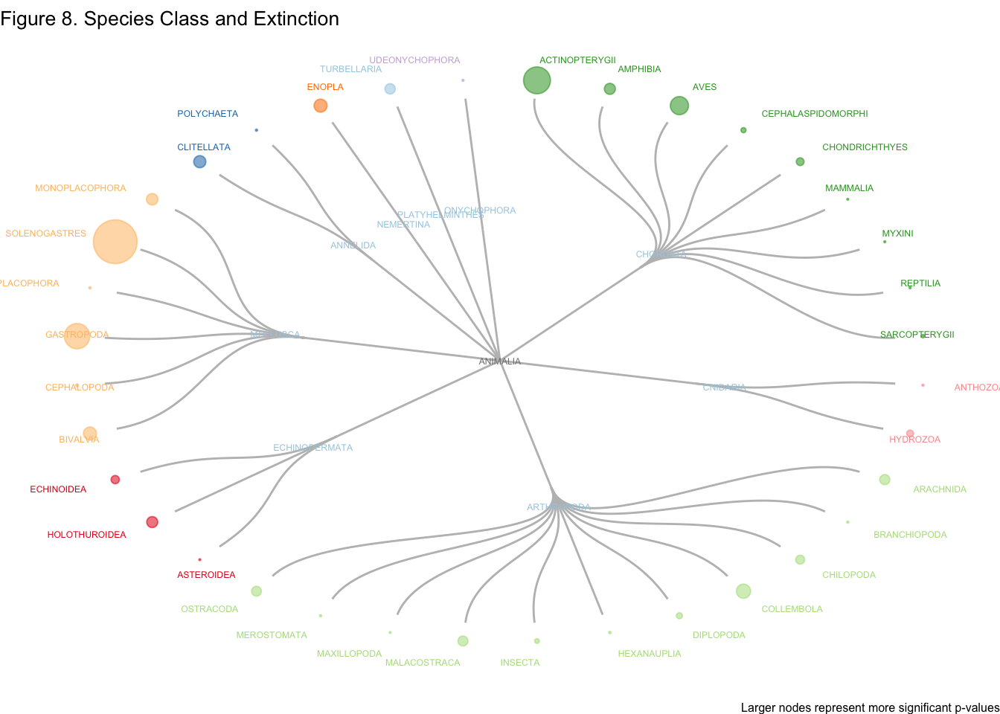
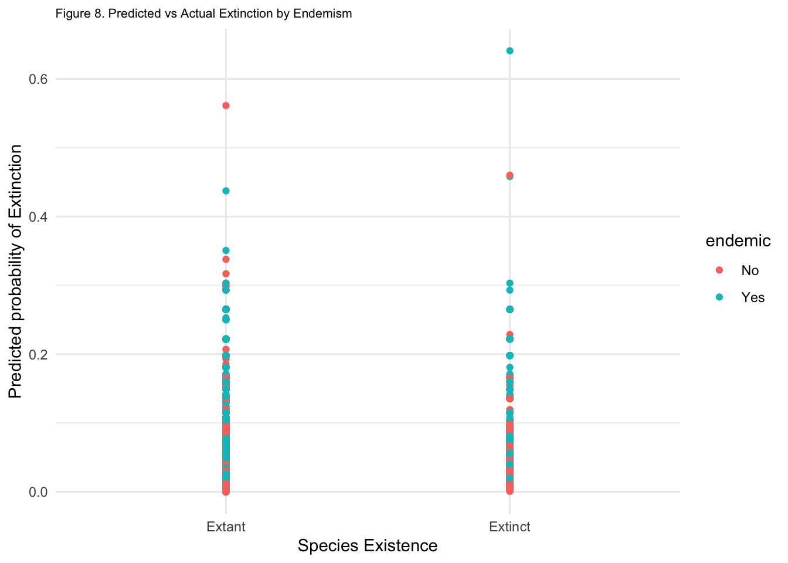

Code
head(predictors) |>
datatable()Species extinction is a normal part of Earth’s natural history, as over 99.9% of species to ever have existed are now extinct1. Background extinction rates under normal conditions is expected to between 0.1 - 1 species of vertebrates to go extinct every 100 years per 10,000 species2. However, throughout Earth’s history there have been calamitous events such as asteroid impacts, volcanic eruptions, and sudden atmospheric changes that have rapidly changed the conditions on Earth to be unsuitable for life. The worst of these extinction events, the Permian extinction, is thought to have killed off 90% of all species on Earth.
The current species extinction rate is estimated to be between 1,000 and 10,000 times higher than the normal background extinction rate3, which is enough to consider our current time period the 6th mass extinction event - widely agreed to be caused by various human activities.

You may be familiar with some of the species that have recently gone extinct due to human activity. Among these are the Chinese River dolphin, which lived in the Yangtze river of China and was last seen in 2007 - thought to be driven to extinction due to heavy use of the river for fishing, transportation and hydroelectricity,
The Tasmanian Tiger which lived on Tasmania, a small island south east of Australia, and was hunted to extinction in the 1930s

And the famous Dodo bird, endemic to the island of Mauritius, it lacked adaptations to prevent its own extinction from hunting by sailors and habitat destruction in the late 17th century.

Species provide us not only with important sources of medicine, food and various other products, but also play important roles in each of their respective ecosystems on which much of our societies’ depend. Each species also helps us elucidate the story of life’s history on Earth and contextualizes our relationship with the natural world. More importantly however, species have intrinsic value regardless of what they provide for humans, and each one lost is a tragedy in its own right.
Its important to understand the factors that render species vulnerable to extinction, as well as what the mechanisms of extinction are and how they work. Extinction is notoriously difficult to study mainly due to our lack of data which I will expand upon in the issues section, but we can hopefully use some of these findings to identify vulnerable species, and better protect them and their ecosystems from extinction and collapse.
For this analysis, I used data from the IUCN Redlist of Threatened Species4 to investigate some of the factors that I suspected may influence extinction. For simplicity, I focused on species within the kingdom Animalia. To help explore and contextualize the data, I created a shiny app that allows users to visualize extinct species on a map with any combination of taxonomic, endemism, habitat, threat, and use type filters. The app can be found here.
After cleaning the data, each row represented one species with a unique assessment_id, and each column contained a variable that I thought might influence extinction. The variables that I focused on were: species endemism (endemic), habitat type (habitat), the type of threat faced (threat), human use (use), and taxonomy (class).
head(predictors) |>
datatable()To clarify some nomenclature before we start modeling:
When I use the term variable, I’m referencing the column names that we’re going to use in our analysis. When I use the term level, I’m referring to the different values that each column name can take on. For example, one of our variables is habitat. The different levels it can take on are below.
levels(predictors$habitat) [1] "Caves" "Desert" "Forest" "Grassland"
[5] "Marine Neritic" "Rocky Areas" "Savanna" "Shrubland"
[9] "Wetlands" I ran a logistic linear regression on each of these variables individually to get a feel for which levels might be significant. I then used an AIC function that added these variables stepwise into 5 different models, one for each added variable. It then scored each model using AIC, a relative way of evaluating model performance, to see which one did the best. I then used the best model to make some predictions. Comparing the coefficients of the variables from their individual models to their coefficients from the consolidated model, I was able evaluate the robustness of each variable. Since we’re testing a large number of levels in the variables, it is likely we will find significance regardless if there is actually an effect. Cross-checking the output of our individual models with our consolidated model allows us to see if our significant levels are robust.
First, we’re going to look at using logistic regression on each variable individually. Our logistic regression uses the following logit function: \[\operatorname{logit}(p)=\log \left(\frac{p}{1-p}\right)=\beta_0+\beta_1 x + \varepsilon \]
Where \(\beta_0\) is our intercept, and \(\beta_1\) is the coefficient for a two-level factor variable that toggles on (\(x = 1\)) when we are not evaluating our reference category. For a variable with \(i\) levels, we will have \(i - 1\) terms of \(\beta\). We will use this expression for each of our variables.
Unfortunately, the model coefficients don’t tell us much since they’re log-transformed, and we have to re-transform to be able to interpret them. Taking endemism for example, after some rearranging we get an expression that we can use to calculate how much more likely an endemic species is to be extinct than a non-endemic species. We will use this approach for each significant level of our variables. \[\hat p = \frac{e^{\beta_0 + \beta_1 x}}{1+ e^{\beta_0 + \beta_1 x}}\]
We’re going to calculate the right hand side of our equation above for endemic species (\(x = 1\)) since its a categorical variable), and non-endemic species (\(x = 0\)). When we take the difference of the two, we calculate how much MORE likely it is for an endemic species to be extinct than a non-endemic species.
I first investigated endemism - a species endemic to Santa Barbra means it is found nowhere else in the world outside of Santa Barbara. This seemed like a good place to start, since an endemic species is geographically and genetically restricted to one location, which seems likely to render it more prone to extinction than a non-endemic species. Below is a mosaic plot - which uses area to visualize to categorical variables - to see if there is an obvious correlation.
It’s difficult to tell, but it looks that endemic species might be more likely to also be extinct. We’re going to take a look at the logistic regression output for regressing extinct on endemic.
Here is the R output for the model summary:
| Endemism | |||
| Predictors | Odds Ratios | Conf. Int (95%) | P-value |
| Intercept | 0.0177 | 0.0166 – 0.0188 | <0.001 |
| Endemic | 2.0405 | 1.8307 – 2.2718 | <0.001 |
| Observations | 70067 | ||
| R2 Tjur | 0.002 | ||
Since our p-value is far below any of the conventional significance levels, it looks like endemism on its own is significant in predicting extinction. After the transformation, our results show that an endemic species is 1.75% more likely to be extinct than a non-endemic species.
I then investigated the type of habitat the species lives in. Running a logistic regression model only on habitat shows that the Cave habitat (our reference group, when \(x = 0\)) is significant - with a minimal p-value.
Wetlands and Forest habitats are also significant at a 0.05 significance level, and Marine Neritic habitats are significant at a significance level of 0.01. Let’s turn the coefficients into something more interpretable as we did above.
Profiled confidence intervals may take longer time to compute.
Use `ci_method="wald"` for faster computation of CIs.| Habitat | ||
| Predictors | Odds Ratios | P-value |
| Intercept | 0.0079 | <0.001 |
| Desert | 2.4085 | 0.130 |
| Forest | 2.7000 | 0.049 |
| Grassland | 1.4574 | 0.482 |
| Marine Neritic | 0.2040 | 0.006 |
| Rocky Areas | 0.8166 | 0.727 |
| Savanna | 0.3305 | 0.118 |
| Shrubland | 1.8463 | 0.236 |
| Wetlands | 3.2211 | 0.020 |
| Observations | 68395 | |
| R2 Tjur | 0.003 | |
Summarizing our significant results in comparison to the reference group (Caves/Subterranean Habitats):
Species living in a Cave/Subterranean habitat have a 0.78% chance of also being extinct, while species living in a Marine Neritic habitat have 0.619% LESS of a chance of being extinct than species living in a Cave/Subterranean habitat.
Next was the type of threat that the species faces.
Our results show that threat types of Agriculture and Aquaculture, Pollution and Invasive species/Diseases are significant.
| Threat | ||
| Predictors | Odds Ratios | P-value |
| Intercept | 0.0217 | <0.001 |
| Biological resource use | 0.7628 | 0.016 |
| Energy production and Mining | 0.5140 | 0.005 |
| Human intrusions and disturbance | 0.9570 | 0.879 |
| Invasive species, genes and disease | 5.2889 | <0.001 |
| Natural system modifications | 1.3708 | 0.012 |
| Pollution | 1.5498 | <0.001 |
| Residential and Commercial Development | 1.1123 | 0.352 |
| Transportation and service corridors | 0.5502 | 0.081 |
| Observations | 37633 | |
| R2 Tjur | 0.019 | |
Again, summarizing our significant results compared to the reference group (Agriculture/Aquaculture):
Species threatened by Agriculture/Aquaculture have a 2.12% chance of also being extinct. Species threatened by Invasive species/Disease and pollution have a 8.16% and 1.1% more chance of being extinct than species threatened by Agriculture/Aquaculture, respectively.
Use seemed like another appropriate variable to investigate. Perhaps species that provide medicinal or energy uses are extracted at more unsustainable rates than a species that provides an artisinal use.
| Use | ||
| Predictors | Odds Ratios | P-value |
| Intercept | 0.0000 | 0.995 |
| ex - situ production | 1018924.8700 | 0.997 |
| fibre | 1.0000 | 1.000 |
| Food - animal | 1.0000 | 1.000 |
| Food - human | 2451051.3686 | 0.996 |
| fuels | 1.0000 | 1.000 |
| handicrafts, jewellery, etc | 1213090.6232 | 0.997 |
| Manufacturing chemicals | 1.0000 | 1.000 |
| Medicine | 1120077.2179 | 0.997 |
| Other | 2628363.0170 | 0.996 |
| other chemicals | 21026904.1357 | 0.996 |
| other household goods | 1.0000 | 1.000 |
| display animals, horticulture | 365417.8191 | 0.997 |
| Poisons | 1.0000 | 1.000 |
| Research | 3304227.7928 | 0.996 |
| sport hunting/Specimen collecting | 349389.6458 | 0.997 |
| unknown | 1.0000 | 1.000 |
| wearing apparel, accessories | 2115511.6966 | 0.996 |
| Observations | 19133 | |
| R2 Tjur | 0.008 | |
This shows that the human use for each species is not significant for predicting extinction. A potential problem with this though, is the amount of missing data in this column. Out of our over 70,000 species observations, approximately 51,000 of these do not have associated use cases. This may be because we simply don’t have a human use for many species, or that the uses just aren’t properly documented.
Taxonomy seemed like another interesting variable to investigate. It seems likely that more closely-related species will face similar extinction pressures. Since we’re working within the Animalia Kingdom, we will run a logistic regression using the class of each species. I’ve shortened the output below to only include a few of the classes for visual purposes.
| Taxa | ||
| Predictors | Odds Ratios | P-value |
| class [AMPHIBIA] | 2.5886 | <0.001 |
| class [ANTHOZOA] | 0.2351 | 0.042 |
| class [ARACHNIDA] | 7.1234 | <0.001 |
| class [AVES] | 1.4023 | 0.001 |
| class [BIVALVIA] | 6.4434 | <0.001 |
| class [GASTROPODA] | 6.3545 | <0.001 |
| class [INSECTA] | 1.2961 | 0.017 |
| class [MAMMALIA] | 1.9058 | <0.001 |
| class [REPTILIA] | 0.7869 | 0.065 |
| Observations | 70067 | |
| R2 Tjur | 0.017 | |
There are quite a few classes that look to be significant here. Especially significant classes appear to be, Actinopterygii (Ray-finned fishes, our reference group) Amphibians, Arachnids, Aves, Bivalves, and Gastropods. Since we’re testing so many levels, we expect that our model will find significance regardless if there is an actual effect. We will keep an eye on the significant classes as we build our larger model. Below is a dendrogram of the evolutionary relationships between classes and their significance levels.

Now, we want to see if any of these significant levels of previous variables are still significant when we start to add our variables together for a more complete model. If they are still significant, we can be comfortable concluding that the level is influencing extinction. We start with predicting extinction off of one variable, endemism, and then incrementally add our other variables of interest. We use a stepwise AIC function - which will take a look at each step, and output scores for each step of the model, indicating which model does the best job at predicting extinction.
| K | AICc | Delta_AICc | AICcWt | LL | |
|---|---|---|---|---|---|
| 5 | 56 | 1615.0 | 0.0 | 1 | -751.2 |
| 4 | 47 | 8794.1 | 7179.1 | 0 | -4350.0 |
| 3 | 18 | 8985.0 | 7370.0 | 0 | -4474.5 |
| 2 | 10 | 11713.7 | 10098.7 | 0 | -5846.9 |
| 1 | 2 | 14210.9 | 12595.9 | 0 | -7103.5 |
The last step in our model has the lowest AIC score, and appears to be the best. This is slightly worrying, since it is the most complicated model - it uses 56 different parameters (1 for each level of each variable) to predict extinction. This could potentially indicate over-fitting, so we’re going to take a look at our coefficients and p-values of our significant variable levels, to see which levels remain robust. Again, I’ve shortened the model output to include only the relevant levels.
| Generalized Mod | ||
| Predictors | Odds Ratios | P-value |
| endemic [Yes] | 4.1961 | <0.001 |
| habitat [Desert] | 1.4347 | 1.000 |
| habitat [Forest] | 3927257.7750 | 0.996 |
| habitat [Marine Neritic] | 1059842.1871 | 0.996 |
| habitat [Wetlands] | 10420495.4785 | 0.996 |
| threat [Pollution] | 6.6093 | <0.001 |
| class [AMPHIBIA] | 2.2075 | 0.019 |
| class [ARACHNIDA] | 0.0000 | 0.996 |
| class [AVES] | 8.3032 | <0.001 |
| class [GASTROPODA] | 0.3001 | 0.245 |
| class [INSECTA] | 0.0000 | 0.990 |
| use [Medicine] | 2209540.2542 | 0.999 |
| use [Poisons] | 0.2001 | 1.000 |
| use [Research] | 4638444.2655 | 0.999 |
| Observations | 11603 | |
| R2 Tjur | 0.101 | |
The significance level for endemism remains far below any conventional significance threshold, it’s coefficient hardly changed, so we can remain confident that Endemic species are indeed more likely to be extinct. This is a robust indicator.
Similarly, threats of Pollution and Invasive Species/Disease remain robust in our more complete model. The significance levels are far below the usual significance thresholds of 0.05 and 0.01, indicating that these are also a robust indicators.
Finally, the Aves, Amphibia, and Gastropoda classes also look like they’re remaining robust - although Aves to a lesser degree. The significance level decreases quite a bit from when we evaluated taxa on their own, and the coefficient changes noticeably. This indicates that there may be an interaction effect between taxa and one of the other variables. Perhaps species in the Aves class (birds) are more prone to infectious diseases than species in other classes.
So, the variable levels that we are confident are associated with species extinction, at least in this dataset are endemic species threatened by pollution or disease, in the Aves, Amphibia, and Gastropoda classes. This is fairly consistent with our current knowledge of extinction.
dendrogram_2I then used the step4 model models to make probability predictions that a species is extinct. Because the augment function that I used removes any NA values before making predictions, I used step4 model instead of step5. The use variable only contains data for ~ 20,000 of our 70,000 species - so we’d be losing well over half of our data if we used the step5 model. We’re still losing ~30,000 species with our step4 model, since not every species has an associated threat, so we expect our p-value in our T test to look slightly different.
The step4 model contains the variables endemic, habitat , threat and class. I then used augment to output the predicted probability that a species is extinct based on the variables used in the step4 model.

We can evaluate how accurate the model is using a confusion matrix.
| Prediction | Reference | Freq |
|---|---|---|
| 0 | 0 | 36524 |
| 1 | 0 | 1065 |
| 0 | 1 | 1 |
| 1 | 1 | 1 |
Although the model is 97% accurate, it is pretty bad at predicting if species are extinct or not. Here’s where machine learning comes into play.
I categorized species that are classified as “extinct in the wild” as extinct, since we are interested in species outside of captivity. I also took a case by case approach to classify some of the critically endangered species with values of the variable Possibly Extinct as TRUE as extinct - since many of these species have not been seen in many years (our Chinese River Dolphin friend actually falls into this category, it is listed as critically endangered despite not having been seen since 2007) and are widely agreed to be at least functionally extinct (where there are so few members of the species surviving in the wild that it is unlikely they will ever come into contact).
To ensure that each observation was a species and that there weren’t multiple observations of the same species, I categorized each of the sub habitats into one general habitat - tropical rainforests in Costa Rica and boreal forests in Siberia are both considered forests. I also collapsed species that live in multiple habitats into one habitat. I took similar approaches with the threat type, generalizing each sub type into one general type, collapsing species facing multiple threats into one threat, as well as the use case. Each of these introduces its own oversimplification issues, and should be explored more thoroughly in future investigations. Here is the link to IUCN’s classification schemes.
On top of all this, it is extremely difficult to study extinction. We don’t have crucial data on population dynamics, geographic range, reproductive capacity, genetic diversity, and many other important factors for many species. In fact, there are probably still millions of species of plants and animals that we have yet to identify, let alone gather enough pertinent data to understand its status. The IUCN only describes species that went extinct relatively recently. When we consider the number of extinctions that have happened over geologic time scales, we are looking at an extremely minute sample. The IUCN has assessed only ~7% of its described species. Even for species that we are aware of, it is very difficult to tell if a species is actually extinct. The Amsterdam Widgeon was endemic to Île of Amsterdam in the French Southern Territories before it went extinct likely due to visiting sealers and the rats they introduced sometime between 1600 - 1800. No naturalist even visited the island until 1874, and we only know that it existed through its bones that were found in 19555. To illustrate an extreme example of how bad we are at this, we’ll take a look at the Coelecanths.
This ancient genus first appeared in the fossil record over 400 million years ago. It disappeared from the fossil record 66 million years ago and was presumed to have gone extinct along with the dinosaurs. In 1938, one species of Coelecanth was rediscovered in a fishing net off the South African Coast. Here it is, a living fossil, alive and swimming.
Since then, another Coelecanth species has been discovered, and over 100 individual specimens have been recorded. Coelecanths are classified as critically endangered, the IUCN estimates that fewer than 500 exist in the wild, and are suffering as a result of over-fishing. This is one example of a Lazarus taxon - an evolutionary line that disappeared from the fossil record only to reappear much later.
A logical next step to continue this analysis would be to more carefully investigate each variable individually by categorizing them even more broadly. Since we’re testing so many different parameters here, our model is likely to find significance regardless if the effect is actually there or not.
Additionally, it is highly likely that many of these variables are interacting with each other. Meaning that one variable likely influences the outcome, and is correlated with another variable. For example, species more closely related (have similar taxonomy) are probably more likely to share habitats, which will also influence how likely it is that they are extinct. Species that share habitats are also probably more likely to share similar threats - especially in habitats undergoing destruction. To address this, we would add interacting terms (habitat:class, threat:habitat) and take a look at how the coefficients change from model to model again. If we find that the coefficients for any of our variables and our intercept change dramatically, then it is likely that we have an interaction effect.
Another idea to investigate that I suspect plays an important role in species extinction is its ecological niche and trophic level. A specialist species with a narrow ecological niche would likely be much more sensitive to changes in environmental conditions - and is therefore likely more prone to extinction than a generalist species that can fill a variety of niches. Similarly, I suspect that species at low trophic levels are much less likely to go extinct than species at higher trophic levels, because they have lower energy requirements and depend on less of the food chain. In the case of an ecosystem collapse, species at higher trophic levels will likely be the first to die out.
Finally, this analysis only uses data from the Animal kingdom. An analysis incorporating plants, arachaea, fungi, and eubacteria would certainly give us a more full picture of extinction. However given the data that we have available, we are far far away from being able to perform this analysis properly.
Our picture of extinction is far from complete. In fact, our picture of species is far from complete. scientists estimate that there are around 8.7 million species of plants and animals in existence6, yet we’ve only identified 1.2 million. This doesn’t even include lifes kingdoms of which we know the least - the Fungi, Archaea, Protozoa, and Bacteria. Its accepted among scientists that some species among us today will go extinct far before they are discovered. Species will continue to go extinct due to our mistreatment of the natural world - and we will lose far more than simply the services they provide to humans. As of right now, there is no reversing extinction (although this is likely to change).
Despite this bleak reality, we are in a better position to address and mitigate our predicament than we were even just a few decades ago. Our tools to understand the natural world, our policies to safeguard it, and our desire to protect it are becoming more interconnected every day. With better information, we are able to make better decisions to become better stewards of the planet. If one thing is clear, the more we learn about life, the more it surprises us. Despite our ongoing destruction of much of the natural world, life finds a way.
Barnosky, A., Matzke, N., Tomiya, S. et al. Has the Earth’s sixth mass extinction already arrived?. Nature 471, 51–57 (2011). https://doi.org/10.1038/nature09678↩︎
Ceballos G, Ehrlich PR, Barnosky AD, García A, Pringle RM, Palmer TM. Accelerated modern human-induced species losses: Entering the sixth mass extinction. Sci Adv. 2015 Jun 19;1(5):e1400253. doi: 10.1126/sciadv.1400253. PMID: 26601195; PMCID: PMC4640606.↩︎
Barnosky, A., Matzke, N., Tomiya, S. et al. Has the Earth’s sixth mass extinction already arrived?. Nature 471, 51–57 (2011). https://doi.org/10.1038/nature09678↩︎
Sweetlove, L. Number of species on Earth tagged at 8.7 million. Nature (2011). https://doi.org/10.1038/news.2011.498↩︎
@online{bartnik2022,
author = {Bartnik, Andrew},
title = {Exploring {Extinction}},
date = {2022-12-04},
url = {https://andrewbartnik.github.io/Portfolio/exploring-extinction},
langid = {en}
}